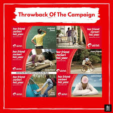

How India's telecom leader mastered emotional connection and category dominance through iconic storytelling.
Airtel mastered the dual art of marketing: emotional connection + category leadership. These campaigns didn't just sell plans—they built cultural phenomena and market dominance.
Analysis covers "Har Ek Friend Zaroori Hota Hai" — emotional brand positioning masterpiece — and "Airtel 4G Girl" — technical superiority turned cultural icon. Both became part of India’s collective memory.
Perfect balance: one won hearts, the other won market share.
While competitors sold call rates, Airtel sold identity. Insight: youth culture revolves around friendships. Campaign made Airtel the brand of relationships, not just telecom.
"Har Ek Friend Zaroori Hota Hai" became conversational currency. Jingle, archetypes, everyday moments created instant cultural penetration. People quoted it more than they remembered competitors.
"Highest level of branding: people remembered the feeling, not the product. Jingle recall + emotional positioning created unbreakable youth loyalty."
Shareability exploded organically. Campaign succeeded by selling belonging, not bandwidth. Long-term brand love outweighed immediate sales focus.

Mobile internet exploded. Airtel owned "India's strongest 4G network" through character-led genius. 4G Girl humanized technical superiority—instantly memorable face became brand asset.
Instead of network specs, campaign sold speed everywhere. Simple emotional promise around technical reality. Nationwide coverage + character recall = category domination.
"Technical advantage became cultural currency. 4G Girl face recognition exceeded network specs recall. 360° distribution owned 4G perception completely."
TV, digital, outdoor, print blitz ensured total visibility. Product truth matched market need perfectly. Airtel converted infrastructure investment into market leadership perception.
Friendship > call rates insight created emotional whitespace competitors missed completely.
"Har Ek Friend" became cultural shorthand. Music recall beats visual-only campaigns for emotional penetration.
4G Girl made network specs relatable. Characters create instant recall vs. abstract technical claims.
Emotional campaigns need single memorable truths. Complexity kills recall and shareability.
TV + digital + outdoor ensured total visibility. Multi-channel repetition creates market ownership.
Emotional trust first, product dominance second. Perfect growth framework for category leaders.
Airtel perfected the marketing double-play: "Har Ek Friend" won hearts, "4G Girl" won market share. Emotional positioning + product leadership = unbeatable framework.
Universal truth: great campaigns solve one clear objective with cultural precision. Airtel didn't create ads—they created conversations and category ownership.
For brands: emotional trust first, product dominance second. Always.
At Brand Business Talk, we help brands with research, strategy, market insights, and growth recommendations. Let's build your brand growth strategy together.